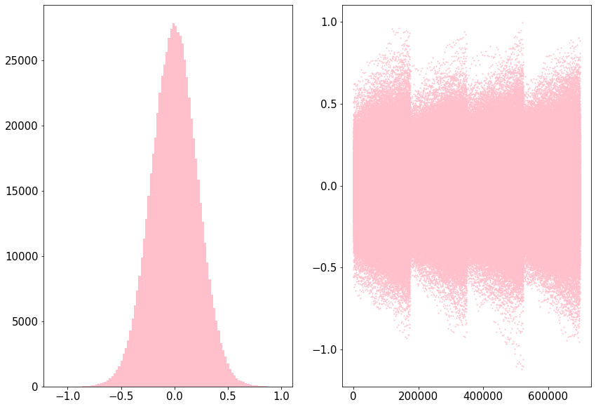
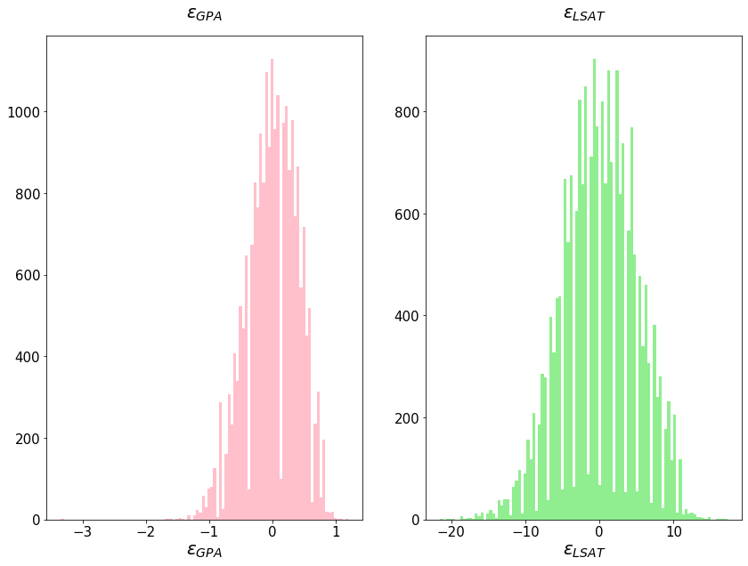

Counterfactual fairness
Building counterfactually fair models
Data
To evaluate counterfactual fairness we will be using the "law school" dataset[1].
The Law School Admission Council conducted a survey across 163 law schools in the United States.
It contains information on 21,790 law students such as their entrance exam scores (LSAT), their
grade-point average (GPA) collected prior to law school, and their first year average grade (FYA).
Given this data, a school may wish to predict if an applicant will have a high FYA. The school would
also like to make sure these predictions are not biased by an individual’s race and sex.
However, the LSAT, GPA, and FYA scores, may be biased due to social factors.
We start by importing the data into a Pandas DataFrame.
import warnings
warnings.filterwarnings("ignore")
import pandas as pd
df = pd.read_csv("data/law_data.csv", index_col=0)
df.head()
| race | sex | LSAT | UGPA | region_first | ZFYA | sander_index | first_pf | |
|---|---|---|---|---|---|---|---|---|
| 0 | White | 1 | 39.0 | 3.1 | GL | -0.98 | 0.782738 | 1.0 |
| 1 | White | 1 | 36.0 | 3.0 | GL | 0.09 | 0.735714 | 1.0 |
| 2 | White | 2 | 30.0 | 3.1 | MS | -0.35 | 0.670238 | 1.0 |
| 5 | Hispanic | 2 | 39.0 | 2.2 | NE | 0.58 | 0.697024 | 1.0 |
| 6 | White | 1 | 37.0 | 3.4 | GL | -1.26 | 0.786310 | 1.0 |
| sex | LSAT | UGPA | region_first | ZFYA | sander_index | first_pf | |
|---|---|---|---|---|---|---|---|
| 0 | 1 | 39.0 | 3.1 | GL | -0.98 | 0.782738 | 1.0 |
| 1 | 1 | 36.0 | 3.0 | GL | 0.09 | 0.735714 | 1.0 |
| 2 | 2 | 30.0 | 3.1 | MS | -0.35 | 0.670238 | 1.0 |
| 5 | 2 | 39.0 | 2.2 | NE | 0.58 | 0.697024 | 1.0 |
| 6 | 1 | 37.0 | 3.4 | GL | -1.26 | 0.786310 | 1.0 |
| Amerindian | Asian | Black | Hispanic | Mexican | Other | Puertorican | White | |
|---|---|---|---|---|---|---|---|---|
| 0 | 0 | 0 | 0 | 0 | 0 | 0 | 0 | 1 |
| 1 | 0 | 0 | 0 | 0 | 0 | 0 | 0 | 1 |
| 2 | 0 | 0 | 0 | 0 | 0 | 0 | 0 | 1 |
| 5 | 0 | 0 | 0 | 1 | 0 | 0 | 0 | 0 |
| 6 | 0 | 0 | 0 | 0 | 0 | 0 | 0 | 1 |
df.iloc[:, 0:7].head()
| LSAT | UGPA | region_first | ZFYA | sander_index | first_pf | Amerindian | |
|---|---|---|---|---|---|---|---|
| 0 | 39.0 | 3.1 | GL | -0.98 | 0.782738 | 1.0 | 0 |
| 1 | 36.0 | 3.0 | GL | 0.09 | 0.735714 | 1.0 | 0 |
| 2 | 30.0 | 3.1 | MS | -0.35 | 0.670238 | 1.0 | 0 |
| 5 | 39.0 | 2.2 | NE | 0.58 | 0.697024 | 1.0 | 0 |
| 6 | 37.0 | 3.4 | GL | -1.26 | 0.786310 | 1.0 | 0 |
| Asian | Black | Hispanic | Mexican | Other | Puertorican | White | male | female | |
|---|---|---|---|---|---|---|---|---|---|
| 0 | 0 | 0 | 0 | 0 | 0 | 0 | 1 | 0 | 1 |
| 1 | 0 | 0 | 0 | 0 | 0 | 0 | 1 | 0 | 1 |
| 2 | 0 | 0 | 0 | 0 | 0 | 0 | 1 | 1 | 0 |
| 5 | 0 | 0 | 1 | 0 | 0 | 0 | 0 | 1 | 0 |
| 6 | 0 | 0 | 0 | 0 | 0 | 0 | 1 | 0 | 1 |
| LSAT | UGPA | region_first | ZFYA | sander_index | first_pf | |
|---|---|---|---|---|---|---|
| 0 | 39 | 3.1 | GL | -0.98 | 0.782738 | 1.0 |
| 1 | 36 | 3.0 | GL | 0.09 | 0.735714 | 1.0 |
| 2 | 30 | 3.1 | MS | -0.35 | 0.670238 | 1.0 |
| 5 | 39 | 2.2 | NE | 0.58 | 0.697024 | 1.0 |
| 6 | 37 | 3.4 | GL | -1.26 | 0.786310 | 1.0 |
| Amerindian | Asian | Black | Hispanic | Mexican | Other | Puertorican | White | male | female | |
|---|---|---|---|---|---|---|---|---|---|---|
| 0 | 0 | 0 | 0 | 0 | 0 | 0 | 0 | 1 | 0 | 1 |
| 1 | 0 | 0 | 0 | 0 | 0 | 0 | 0 | 1 | 0 | 1 |
| 2 | 0 | 0 | 0 | 0 | 0 | 0 | 0 | 1 | 1 | 0 |
| 5 | 0 | 0 | 0 | 1 | 0 | 0 | 0 | 0 | 1 | 0 |
| 6 | 0 | 0 | 0 | 0 | 0 | 0 | 0 | 1 | 0 | 1 |
Training and testing subsets
We will now divide the dataset into training and testing subsets. We will use the same ratio as in [2], that is 20%.
from sklearn.model_selection import train_test_split
df_train, df_test = train_test_split(df, random_state=23, test_size=0.2);
Models
Unfair model
As detailed in [2], the concept of counterfactual fairness holds under three levels of assumptions of increasing strength.
The first of such levels is Level 1, where $\hat{Y}$ is built using only the observable non-descendants of $A$. This only requires partial causal ordering and no further causal assumptions, but in many problems there will be few, if any, observables which are not descendants of protected demographic factors.
For this dataset, since LSAT, GPA, and FYA are all biased by ethnicity and gender, we cannot use any observed
features to construct a Level 1 counterfactually fair predictor as described in Level 1.
Instead (and in order to compare the performance with Level 2 and 3 models) we will build two unfair baselines.
- A Full model, which will be trained with the totality of the variables
- An Unaware model (FTU), which will be trained will all the variables, except the protected attributes $A$.
Let's proceed with calculating the Full model.
Full model
As mentioned previously, the full model will be a simple linear regression in order to predict ZFYA using all of the variables.
from sklearn.linear_model import LinearRegression
linreg_unfair = LinearRegression()
The inputs will then be the totality of the variabes (protected variables $A$, as well as UGPA and LSAT).
import numpy as np
X = np.hstack(
(
df_train[A],
np.array(df_train["UGPA"]).reshape(-1, 1),
np.array(df_train["LSAT"]).reshape(-1, 1),
)
)
print(X)
[[ 0. 0. 0. ... 1. 3.1 39. ]
[ 0. 0. 0. ... 1. 3.5 36. ]
[ 0. 0. 0. ... 1. 3.9 46. ]
...
[ 0. 0. 0. ... 1. 2.9 33. ]
[ 0. 0. 0. ... 0. 2.9 31. ]
[ 0. 0. 0. ... 0. 3.6 39. ]]
As for our target, we are trying to predict ZFYA (first year average grade).
y = df_train["ZFYA"]
y[:10]
We fit the model:
linreg_unfair = linreg_unfair.fit(X, y)
And perform some predictions on the test subset.
X_test = np.hstack(
(
df_test[A],
np.array(df_test["UGPA"]).reshape(-1, 1),
np.array(df_test["LSAT"]).reshape(-1, 1),
)
)
X_test
predictions_unfair = linreg_unfair.predict(X_test)
predictions_unfair
We will also calculate the unfair model score for future use.
score_unfair = linreg_unfair.score(X_test, df_test["ZFYA"])
print(score_unfair)
0.12701634112845117
from sklearn.metrics import mean_squared_error
RMSE_unfair = np.sqrt(mean_squared_error(df_test["ZFYA"], predictions_unfair))
print(RMSE_unfair)
0.8666709890234552
Fairness through unawareness (FTU)
As also mentioned in [2], the second baseline we will use is an Unaware model (FTU), which will be trained will all the variables, except the protected attributes $A$.
linreg_ftu = LinearRegression()
We will create the inputs as previously, but without using the protected attributes, $A$.
X_ftu = np.hstack(
(
np.array(df_train["UGPA"]).reshape(-1, 1),
np.array(df_train["LSAT"]).reshape(-1, 1),
)
)
X_ftu
And we fit the model:
linreg_ftu = linreg_ftu.fit(X_ftu, y)
Again, let's perform some predictions on the test subset.
X_ftu_test = np.hstack(
(np.array(df_test["UGPA"]).reshape(-1, 1), np.array(df_test["LSAT"]).reshape(-1, 1))
)
X_ftu_test
predictions_ftu = linreg_ftu.predict(X_ftu_test)
predictions_ftu
As previously, let's calculate this model's score.
ftu_score = linreg_ftu.score(X_ftu_test, df_test["ZFYA"])
print(ftu_score)
0.0917442226187073
RMSE_ftu = np.sqrt(mean_squared_error(df_test["ZFYA"], predictions_ftu))
print(RMSE_ftu)
0.8840061503773576
Latent variable model
Still according to [2], a Level 2 approach will model latent ‘fair’ variables which are parents of observed variables.
If we consider a predictor parameterised by $\theta$, such as:
$$ \hat{Y} \equiv g_\theta (U, X_{\nsucc A}) $$
with $X_{\nsucc A} \subseteq X$ are non-descendants of $A$. Assuming a loss function $l(\cdot,\cdot)$ and training data $\mathcal{D}\equiv\{(A^{(i), X^{(i)}, Y^{(i)}})\}$, for $i=1,2\dots,n$, the empirical loss is defined as
$$ L(\theta)\equiv \sum_{i=1}^n \mathbb{E}[l(y^{(i)},g_\theta(U^{(i)}, x^{(i)}_{\nsucc A}))]/n $$
which has to be minimised in order to $\theta$. Each $n$ expectation is with respect to random variable $U^{(i)}$ such that
$$ U^{(i)}\sim P_{\mathcal{M}}(U|x^{(i)}, a^{(i)}) $$
where $P_{\mathcal{M}}(U|x,a)$ is the conditional distribution of the background variables as given by a causal model M that is available by assumption.
If this expectation cannot be calculated analytically, Markov chain Monte Carlo (MCMC) can be used to approximate it as in the following algorithm.
We will follow the model specified in the original paper, where the latent variable considered is $K$, which represents a student's knowledge.
$K$ will affect GPA, LSAT and the outcome, FYA.
The model can be defined by:
$$ \begin{aligned} GPA &\sim \mathcal{N}(GPA_0 + w_{GPA}^KK + w_{GPA}^RR + w_{GPA}^SS, \sigma_{GPA}) \\ LSAT &\sim \text{Po}(\exp(LSAT_0 + w_{LSAT}^KK + w_{LSAT}^RR + w_L^SS)) \\ FYA &\sim \mathcal{N}(w_{FYA}^KK + w_{FYA}^RR + w_{FYA}^SS, 1) \\ K &\sim \mathcal{N}(0,1) \end{aligned} $$ The priors used will be:
$$ \begin{aligned} GPA_0 &\sim \mathcal{N}(0, 1) \\ LSAT_0 &\sim \mathcal{N}(0, 1) \\ GPA_0 &\sim \mathcal{N}(0, 1) \end{aligned} $$
import pymc3 as pm
K = len(A)
def MCMC(data, samples=1000):
N = len(data)
a = np.array(data[A])
model = pm.Model()
with model:
# Priors
k = pm.Normal("k", mu=0, sigma=1, shape=(1, N))
gpa0 = pm.Normal("gpa0", mu=0, sigma=1)
lsat0 = pm.Normal("lsat0", mu=0, sigma=1)
w_k_gpa = pm.Normal("w_k_gpa", mu=0, sigma=1)
w_k_lsat = pm.Normal("w_k_lsat", mu=0, sigma=1)
w_k_zfya = pm.Normal("w_k_zfya", mu=0, sigma=1)
w_a_gpa = pm.Normal("w_a_gpa", mu=np.zeros(K), sigma=np.ones(K), shape=K)
w_a_lsat = pm.Normal("w_a_lsat", mu=np.zeros(K), sigma=np.ones(K), shape=K)
w_a_zfya = pm.Normal("w_a_zfya", mu=np.zeros(K), sigma=np.ones(K), shape=K)
sigma_gpa_2 = pm.InverseGamma("sigma_gpa_2", alpha=1, beta=1)
mu = gpa0 + (w_k_gpa * k) + pm.math.dot(a, w_a_gpa)
# Observed data
gpa = pm.Normal(
"gpa",
mu=mu,
sigma=pm.math.sqrt(sigma_gpa_2),
observed=list(data["UGPA"]),
shape=(1, N),
)
lsat = pm.Poisson(
"lsat",
pm.math.exp(lsat0 + w_k_lsat * k + pm.math.dot(a, w_a_lsat)),
observed=list(data["LSAT"]),
shape=(1, N),
)
zfya = pm.Normal(
"zfya",
mu=w_k_zfya * k + pm.math.dot(a, w_a_zfya),
sigma=1,
observed=list(data["ZFYA"]),
shape=(1, N),
)
step = pm.Metropolis()
trace = pm.sample(samples, step)
return trace
train_estimates = MCMC(df_train)
Multiprocess sampling (4 chains in 4 jobs)
CompoundStep
>Metropolis: [sigma_gpa_2]
>Metropolis: [w_a_zfya]
>Metropolis: [w_a_lsat]
>Metropolis: [w_a_gpa]
>Metropolis: [w_k_zfya]
>Metropolis: [w_k_lsat]
>Metropolis: [w_k_gpa]
>Metropolis: [lsat0]
>Metropolis: [gpa0]
>Metropolis: [k]
Sampling 4 chains for 1_000 tune and 1_000 draw iterations (4_000 + 4_000 draws total) took 87 seconds.
The rhat statistic is larger than 1.4 for some parameters. The sampler did not converge.
The estimated number of effective samples is smaller than 200 for some parameters.
Let's plot a single trace for $k^{(i)}$.
import matplotlib.pyplot as plt
import seaborn as sns
from plotutils import *
# Thin the samples before plotting
k_trace = train_estimates["k"][:, 0].reshape(-1, 1)[0::100]
plt.subplot(1, 2, 1)
plt.hist(k_trace, color=colours[0], bins=100)
plt.subplot(1, 2, 2)
plt.scatter(range(len(k_trace)), k_trace, s=1, c=colours[0])
plt.show()

train_k = np.mean(train_estimates["k"], axis=0).reshape(-1, 1)
train_k
We can now estimate $k$ using the test data:
test_map_estimates = MCMC(df_test)
Multiprocess sampling (4 chains in 4 jobs)
CompoundStep
>Metropolis: [sigma_gpa_2]
>Metropolis: [w_a_zfya]
>Metropolis: [w_a_lsat]
>Metropolis: [w_a_gpa]
>Metropolis: [w_k_zfya]
>Metropolis: [w_k_lsat]
>Metropolis: [w_k_gpa]
>Metropolis: [lsat0]
>Metropolis: [gpa0]
>Metropolis: [k]
Sampling 4 chains for 1_000 tune and 1_000 draw iterations (4_000 + 4_000 draws total) took 35 seconds.
The rhat statistic is larger than 1.4 for some parameters. The sampler did not converge.
The estimated number of effective samples is smaller than 200 for some parameters.
test_k = np.mean(test_map_estimates["k"], axis=0).reshape(-1, 1)
test_k
We now build the Level 2 predictor, using $k$ as the input.
linreg_latent = LinearRegression()
linreg_latent = linreg_latent.fit(train_k, df_train["ZFYA"])
predictions_latent = linreg_latent.predict(test_k)
predictions_latent
latent_score = linreg_latent.score(test_k, df_test["ZFYA"])
print(latent_score)
0.008509520014148064
RMSE_latent = np.sqrt(mean_squared_error(df_test["ZFYA"], predictions_latent))
print(RMSE_latent)
0.9236245677858551
Additive error model
Finally, in Level 3, we model GPA, LSAT, and FYA as continuous variables with additive error terms
independent of race and sex[3].
This corresponds to
$$
\begin{aligned}
GPA &= b_G + w^R_{GPA}R + w^S_{GPA}S + \epsilon_{GPA}, \epsilon_{GPA} \sim p(\epsilon_{GPA}) \\
LSAT &= b_L + w^R_{LSAT}R + w^S_{LSAT}S + \epsilon_{LSAT}, \epsilon_{LSAT} \sim p(\epsilon_{LSAT}) \\
FYA &= b_{FYA} + w^R_{FYA}R + w^S_{FYA}S + \epsilon_{FYA} , \epsilon_{FYA} \sim p(\epsilon_{FYA})
\end{aligned}
$$
We estimate the error terms $\epsilon_{GPA}, \epsilon_{LSAT}$ by first fitting two models that each use race and sex to individually
predict GPA and LSAT. We then compute the residuals of each model (e.g., $\epsilon_{GPA} =GPA−\hat{Y}{GPA}(R, S)$).
We use these residual estimates of $\epsilon{GPA}, \epsilon_{LSAT}$ to predict $FYA$. In [2] this is called Fair Add.
Since the process is similar for the individual predictions for GPA and LSAT, we will write a method to avoid repetion.
def calculate_epsilon(data, var_name, protected_attr):
X = data[protected_attr]
y = data[var_name]
linreg = LinearRegression()
linreg = linreg.fit(X, y)
predictions = linreg.predict(X)
return data[var_name] - predictions
Let's apply it to each variable, individually. First we calculate $\epsilon_{GPA}$:
epsilons_gpa = calculate_epsilon(df, "UGPA", A)
epsilons_gpa
Next, we calculate $\epsilon_{LSAT}$:
epsilons_LSAT = calculate_epsilon(df, "LSAT", A)
epsilons_LSAT
Let's visualise the $\epsilon$ distribution quickly:
import matplotlib.pyplot as plt
import seaborn as sns
plt.subplot(1, 2, 1)
plt.hist(epsilons_gpa, color=colours[0], bins=100)
plt.title("$\epsilon_{GPA}$")
plt.xlabel("$\epsilon_{GPA}$")
plt.subplot(1, 2, 2)
plt.hist(epsilons_LSAT, color=colours[1], bins=100)
plt.title("$\epsilon_{LSAT}$")
plt.xlabel("$\epsilon_{LSAT}$")
plt.show()

We finally use the calculated $\epsilon$ to train a model in order to predict FYA.
We start by getting the subset of the $\epsilon$ which match the training indices.
X = np.hstack(
(
np.array(epsilons_gpa[df_train.index]).reshape(-1, 1),
np.array(epsilons_LSAT[df_train.index]).reshape(-1, 1),
)
)
X
linreg_fair_add = LinearRegression()
linreg_fair_add = linreg_fair_add.fit(
X,
df_train["ZFYA"],
)
We now use this model to calculate the predictions
X_test = np.hstack(
(
np.array(epsilons_gpa[df_test.index]).reshape(-1, 1),
np.array(epsilons_LSAT[df_test.index]).reshape(-1, 1),
)
)
predictions_fair_add = linreg_fair_add.predict(X_test)
predictions_fair_add
And as previously, we calculate the model's score:
fair_add_score = linreg_fair_add.score(X_test, df_test["ZFYA"])
print(fair_add_score)
0.04475841449183948
RMSE_fair_add = np.sqrt(mean_squared_error(df_test["ZFYA"], predictions_fair_add))
print(RMSE_fair_add)
0.9065835039365202
Comparison
The scores, so far, are:
print(f"Unfair score:\t{score_unfair}")
print(f"FTU score:\t{ftu_score}")
print(f"L2 score:\t{latent_score}")
print(f"Fair add score:\t{fair_add_score}")
Unfair score: 0.12701634112845117
FTU score: 0.0917442226187073
L2 score: 0.008509520014148064
Fair add score: 0.04475841449183948
print(f"Unfair RMSE:\t{RMSE_unfair}")
print(f"FTU RMSE:\t{RMSE_ftu}")
print(f"L2 RMSE:\t{RMSE_latent}")
print(f"Fair add RMSE:\t{RMSE_fair_add}")
Unfair RMSE: 0.8666709890234552
FTU RMSE: 0.8840061503773576
L2 RMSE: 0.9236245677858551
Fair add RMSE: 0.9065835039365202
Measuring counterfactual fairness
First, we will measure two quantities, the Statistical Parity Difference (SPD)[4] and Disparate impact (DI)[5].
Statistical Parity Difference / Disparate Impact
from fairlearn.metrics import demographic_parity_difference, demographic_parity_ratio
parities = []
impacts = []
for a in A:
parity = demographic_parity_difference(df_train["ZFYA"], df_train["ZFYA"],
sensitive_features = df_train[a])
di = demographic_parity_ratio(df_train["ZFYA"], df_train["ZFYA"],
sensitive_features = df_train[a])
parities.append(parity)
impacts.append(di)
df_parities = pd.DataFrame({'protected':A,'parity':parities,'impact':impacts})
import matplotlib.pyplot as plt
from plotutils import *
fig = plt.figure()
ax = fig.add_subplot(111)
ax2 = ax.twinx()
fig.suptitle('Statistical Parity Difference and Disparate Impact')
width = 0.4
df_parities.plot(x ='protected', y = 'parity', kind = 'bar', ax = ax, width = width,
position=1, color=colours[0], legend=False)
df_parities.plot(x ='protected', y = 'impact', kind = 'bar', ax = ax2, width = width,
position = 0, color = colours[1], legend = False)
ax.axhline(y = 0.1, linestyle = 'dashed', alpha = 0.7, color = colours[0])
ax2.axhline(y = 0.55, linestyle = 'dashed', alpha = 0.7, color = colours[1])
patches, labels = ax.get_legend_handles_labels()
ax.legend(patches, ['Stat Parity Diff'], loc = 'upper left')
patches, labels = ax2.get_legend_handles_labels()
ax2.legend(patches, ['Disparate Impact'], loc = 'upper right')
labels = [item.get_text() for item in ax.get_xticklabels()]
for i in range(len(A)):
labels[i] = A[i]
ax.set_xticklabels(labels)
ax.set_xlabel('Protected Features')
ax.set_ylabel('Statistical Parity Difference')
ax2.set_ylabel('Disparate Impact')
plt.show()

Finding sensitive features
Typically a $SPD > 0.1$ and a $DI < 0.9$ might indicate discrimination on those features.
All protected attributes fail the SPD test and, in our dataset, we have two features (Hispanic and Mexican) which clearly fail the DI test.
for a in ["Mexican", "Hispanic"]:
spd = demographic_parity_difference(y_true=df_train["ZFYA"],
y_pred=df_train["ZFYA"],
sensitive_features = df_train[a])
print(f"SPD({a}) = {spd}")
di = demographic_parity_ratio(y_true=df_train["ZFYA"],
y_pred=df_train["ZFYA"],
sensitive_features = df_train[a])
print(f"DI({a}) = {di}")
SPD(Mexican) = 0.0014017257538768636
DI(Mexican) = 0.5556529360210342
SPD(Hispanic) = 0.003272247102713093
DI(Hispanic) = 0.34227833235466826
McIntyre, Frank, and Michael Simkovic. "Are law degrees as valuable to minorities?." International Review of Law and Economics 53 (2018): 23-37. ↩
Kusner, Matt J., Joshua Loftus, Chris Russell, and Ricardo Silva. "Counterfactual fairness." In Advances in neural information processing systems, pp. 4066-4076. 2017. ↩ ↩ ↩ ↩ ↩
That may in turn be correlated with one-another. ↩
See {ref}
fairness:demographic-parity-difference. ↩See {ref}
fairness:disparate-impact. ↩